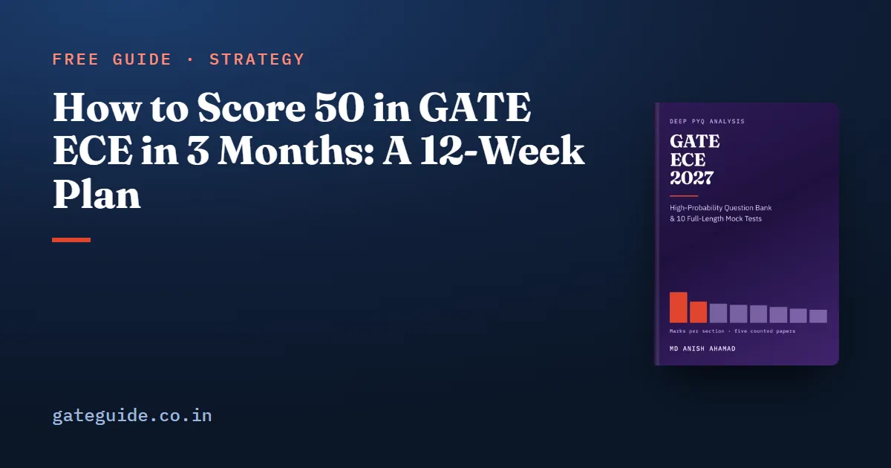

How to Score 50 in GATE ECE in 3 Months: A 12-Week Plan

Fifty marks in GATE ECE in three months is a reasonable target if you can give about twenty hours a week, but it is a target, not a promise. This guide shows where 50 marks can come from, section by section, using the marks counted from five EC papers (2010, 2019, 2020, 2025 and 2026). It then turns that arithmetic into a twelve-week plan.
In this guide
The central point is simple. You do not reach 50 by mastering three sections. You reach it by collecting General Aptitude properly, securing a little over half of the big sections and not giving away the small ones.
Key takeaways
- Fifty is a planning target, not a qualifying mark or a cutoff. Those are published with the result and vary by year and category, so check the result notification.
- On an average counted paper, the hit rates below reach about 52 marks. The same rates give between 50.3 and 53.4 across the five counted papers. The margin is real but thin.
- General Aptitude is the cheapest block: 15 marks in every counted paper, all multiple choice.
- Networks, Engineering Mathematics and Analog Circuits together were worth 36 to 41 marks in every counted paper. Study them in parallel, not one after another.
- Twelve weeks buys one first pass, one revision pass on the recurring concepts and about six reviewed mocks, at roughly 228 hours.
Where 50 marks come from
The first column is each section's mean over the five counted papers. The second is the share of those marks you aim to secure after negative marking. That share is judgement, set at what a solid first pass and one revision pass usually make possible. It is not a measured figure.
| Section | Mean marks (5 papers) | Target share (judgement) | Expected marks |
|---|---|---|---|
| General Aptitude | 15.0 | 70% | 10.5 |
| Networks, Signals and Systems | 17.0 | 65% | 11.1 |
| Engineering Mathematics | 12.0 | 60% | 7.2 |
| Analog Circuits | 10.8 | 50% | 5.4 |
| Communications | 10.0 | 50% | 5.0 |
| Digital Circuits | 9.8 | 50% | 4.9 |
| Electronic Devices | 8.8 | 35% | 3.1 |
| Control Systems | 8.0 | 40% | 3.2 |
| Electromagnetics | 7.4 | 25% | 1.9 |
| Total | 98.8 | 52.2 (rows rounded) |
The means sum to 98.8 because 1.2 marks per paper, all of them in 2010, tested material no longer in the syllabus. The full year-by-year table is in the subject-wise weightage guide.
A mean describes a paper nobody has set, so test the plan against real ones. Apply the same shares to each counted paper's actual section marks and the totals are 50.3 for 2010, 51.6 for 2019, 52.8 for 2020, 52.9 for 2025 and 53.4 for 2026. The 2010 figure is lowest partly because six of its marks are outside the 2027 syllabus and score nothing here.
Two conclusions follow. First, the plan clears 50 across all five shapes of paper, but only just in two of them. Second, the margin comes from breadth. Drop Electromagnetics and Electronic Devices entirely and you lose about five marks, which takes every version of the paper below 50.
The twelve weeks
The hours use the book's own per-concept figures. The 17 concepts found in four or five counted papers take about 75 hours, the 23 in three papers about 55, and the 38 in two papers about 28 at full depth. The plan below takes that last group at half depth, adds a revision pass on the 17 (about 25 hours), General Aptitude at 21 hours, about 8 hours for the 2027 additions and other rarely asked lines, and six mocks at five hours each. The weekly split is judgement.
| Weeks | What gets studied | Mocks | Hours |
|---|---|---|---|
| 1–5 | Networks, Engineering Mathematics and Analog Circuits in parallel every week, then Communications. The recurring concepts first, then the three-paper ones. General Aptitude daily | 1, at the end of week 5 | 100 |
| 6–8 | Digital Circuits, Control Systems, Electronic Devices, Electromagnetics. Recurring concepts first. A small fixed budget for the 2027 additions | 1 | 60 |
| 9–10 | Revision pass on the 17 recurring concepts (about 25 hours); one-line notes for the two-paper concepts | 2 | 38 |
| 11–12 | Repair from the mock keys; timed General Aptitude; the last mock, with nothing after it | 2 | 30 |
That totals 228 hours, a little under 20 a week. Count back from your own paper's date in the official paper-wise schedule; the GATE 2027 exam dates guide has the overall calendar, and dates can change, so check the current notification.
The first mock waits until the four heaviest sections have had a pass. Networks, Engineering Mathematics, Analog Circuits and Communications carry 49.8 mean marks between them and hold 14 of the 17 recurring concepts. A test before then measures material you have not studied. The concepts themselves, with the counted questions behind each, are in the GATE ECE important topics guide.
Why the top three go in parallel
Networks, Engineering Mathematics and Analog Circuits came to 40, 36, 41, 41 and 41 marks in 2010, 2019, 2020, 2025 and 2026. The block is steady; the order inside it is not. Networks took 20 and Engineering Mathematics 9 in 2026, while in 2025 Engineering Mathematics took 15 and Networks 13.
A candidate who spends four weeks on Networks and reaches Analog Circuits in week six has bet on an order the evidence does not support. Take recurring concepts from all three every week, and by week five you should be able to sit a mixed set without knowing which section each question came from.
What not to spend time on
- Deleted material. Nonlinear first-order differential equations left the syllabus. 2019 Q12 and 2020 Q37 are counted questions on a topic that no longer exists, so skip that chapter in any older book.
- Depth in the two-paper concepts. In twelve weeks, take them at one formula, one worked question and one trap each.
- Extra mocks at the expense of reviews. A mock is three hours sitting and two reviewing. If a week is short, drop a whole mock rather than half a review.
What you should not cut is any whole section. The smallest technical section never fell below 6 marks in a counted paper, and a quarter of 7.4 marks is cheap to secure.
General Aptitude: the steadiest ten marks
General Aptitude was exactly 15 marks in all five counted papers, ten questions every time, all multiple choice. The book prices it at 21 hours, and the plan above keeps it in a short daily slot rather than a block. Seventy per cent of it is 10.5 marks, a fifth of the whole target, from the section that changes least. The General Aptitude preparation guide covers the question types.
Checking progress without fooling yourself
Mock scores are useful for spotting weak sections, but the book's mocks have not been sat as an exam, so no score on them converts to a GATE score. Use them for the pattern of losses. At the end of week 5 only the four heaviest sections and General Aptitude are on the table, 64.8 mean marks in all; the book's own checkpoint at that stage is half of those, 32 out of 100.
From the second mock onwards, count two things off every script: blank numerical-answer questions and blank multiple-select questions. Neither carries negative marking, so the target for both is zero. Once you have marks in hand, how the GATE score is calculated shows what they turn into.
The ECE book has the twenty-week plan with its eight-week and two-week versions, the 78 recurring concepts ranked with their question numbers, 925 questions with worked solutions and ten full-length mocks for the last six weeks.
Frequently asked questions
Is it possible to score 50 in GATE ECE in 3 months?
It is a realistic target for a candidate who can give around twenty hours a week for twelve weeks, but nobody can promise it. The arithmetic in this guide reaches about 52 marks on an average counted paper by securing roughly half of most technical sections and 70 per cent of General Aptitude. The margin over 50 is small, so the plan cannot afford a skipped section.
Which subjects should I focus on to get 50 in GATE ECE?
General Aptitude and the block of Networks, Signals and Systems, Engineering Mathematics and Analog Circuits. General Aptitude was 15 marks in all five counted papers, and the three-section block was worth between 36 and 41 marks in every one. Together they carry more than half the paper, and every other section still needs a first pass.
Is 50 marks a good score in GATE ECE?
It depends on the year and on what you want the score for. Qualifying marks are published with the result, and admission and recruitment cutoffs are set separately by each institute or organisation, so check the result notification and the relevant admission notice. Treat 50 as a planning target that forces you to cover every section, not as a known threshold.
How many hours a day should I study for GATE ECE in 3 months?
The plan here works out at about 228 hours over twelve weeks, a little under 20 hours a week, or just over three hours a day across six days. That figure comes from the book's per-concept hours for the recurring topics, a General Aptitude budget and six reviewed mock tests. More time helps most if it goes into revision.
Can I skip Electromagnetics in a 3-month GATE ECE plan?
Not on the counted evidence. Electromagnetics is the smallest technical section at a mean of 7.4 marks, but it never fell below 6 marks in any counted paper, and in 2019, the one counted paper set by IIT Madras, it was worth 9. A light pass that secures a quarter of it is cheap and protects the margin over 50.
Sources
- GATE 2027 official website (IIT Madras)
- GATE 2026 EC question paper (IIT Guwahati)
- GATE 2026 EC answer key (IIT Guwahati)
- GATE 2025 EC question paper (IIT Roorkee)
- GATE 2020 EC question paper with answer key (IIT Delhi)
- GATE 2019 EC question paper with answer key (IIT Madras)
Dates, fees and the syllabus are set by the GATE 2027 organising institute and can change. Always confirm at gate2027.iitm.ac.in.